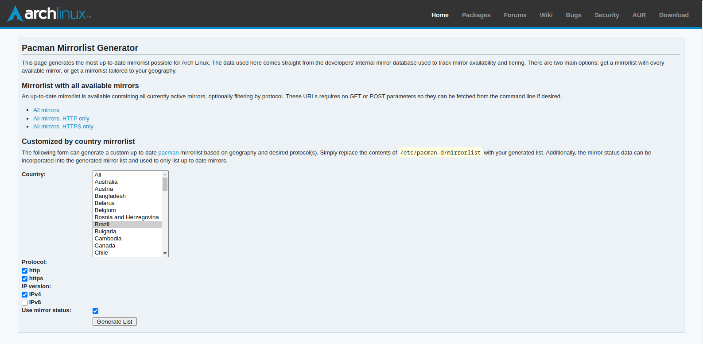
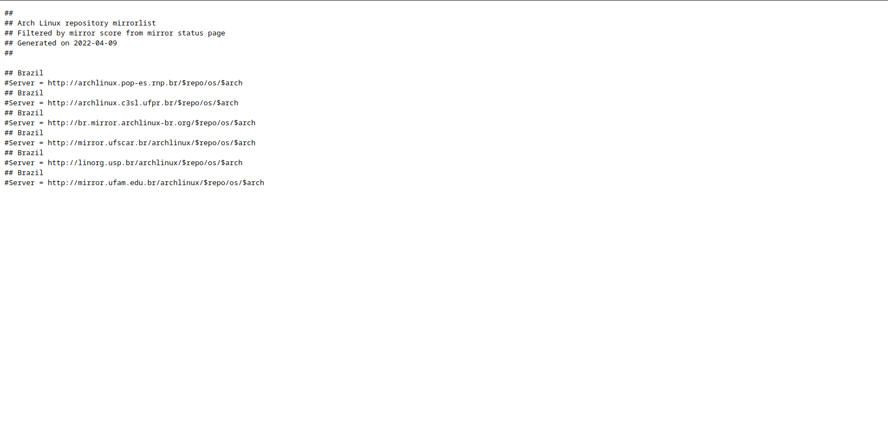

Mirrorlist
Mirrorlist é onde fica a localização dos servidores de onde serão baixados os pacotes instalados pelo pacman podemos alteralo de forma bem simples, executando o comando como root:
nano /etc/pacman.d/mirrorlist
Já iremos poder ver os servidores dos pacotes, para atualizar está lista podemos utilizar uma ferramenta do próprio site do Arch chamada Pacman Mirrorlist Generator.
Após clicar em gerar lista você verá uma tela semelhante a esta:
Agora é somente copiar todas as linha e copialas para o arquivo /etc/pacman.d/mirrorlist, caso esteja na instalação do Arch e não possua interface gráfica você pode usar o lynx. Para isso execute o comando:
lynx https://archlinux.org/mirrorlist
e selecione as opições como faria em qualquer navegador, após ter gerado a mirrolist, precione P no teclado, selecione a opição para salvar local, e mude o nome para um nome fácil para você lembrar depois, agora execute o seguinte comando como root:
cat NOME_DO_ARQUIVO > /etc/pacman.d/mirrolist
Descomente os servidores
Não se esqueça de descomentar os servidores, para que tudo funcione corretamente
Após ter modificado o arquivo MIRRORLIST, precisamos atualizar a lista de pacotes do Arch executando o seguinte comando como root:
pacman -Sy
Se você fez corretamente tudo deve estar funcionando.